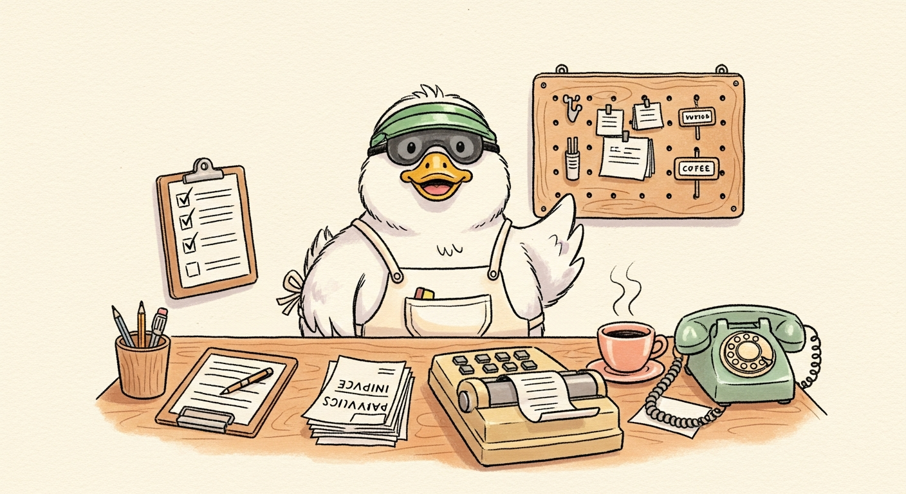

A small illustrated guide for anyone who runs the back office of a real business. Take the tour with me. Each station is about a coffee-break long. By the end, you'll have a written skill you can hand to Claude and run on Tuesday morning.
Five short stations get you fluent in the way of thinking. The builder bench at the end lets you actually write your first admin skill. Pick a station, or start at the beginning with me.
Some admin tasks are skill-shaped, most aren't. Learn to tell the difference.
Station 02The procure-to-pay flow is six output forms in a trench coat. Cut where the form changes.
Station 03"An invoice" is a vibe. {supplier, line_items[], total} is a shape. The shape makes everything else work.
"Follow up on this job" is one verb in your head. It's five numbered moves on the page. Write the moves down.
Station 05Two skills with mismatched schemas don't click together. Design the joint, not just the nodes.
Studio 01Fill in seven small fields and walk out with a real admin skill, ready to hand to Claude. Autosaves in your browser.
It's a small number of sub-tasks that each have a clean shape if you bother to look. Decompose them, write each as a skill, and an hour of Tuesday admin becomes fifteen minutes of orchestration.
The best admin skills are the boring ones. The ones you stop noticing because they just run quietly every week. If your skill is dramatic or surprising, something is wrong. Boring is the goal.
Not abstract. The exact six places admin lives in a small business, in the order they normally chain together.
From low-stock signal to PO drafted, sent, and tracked.
Real-time inventory state. Where things are, how many, by SKU, by lot.
Velocity, lead time, MOQ. Projected stock-out, recommended reorder.
Customer-side issuance plus the supplier-side equivalent.
3-way match. Discrepancy classification. Pay, hold, or reject.
For private label. Status pull, slip calc, follow-up matching urgency.
About 25 minutes if you walk through stations 1-5. Add ~25 minutes more for the builder studio at the end. You can split it across days. The workshop doesn't close.